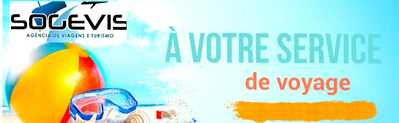

Nos Services
Nous offrons des services sur mesure, alliant expertise et innovation pour satisfaire vos besoins.
Services d'Agence de Voyage
- Réservation de billets d'avion internationaux
- Organisation de circuits touristiques personnalisés
- Réservation d'hôtels et hébergements
- Location de voitures et services de transport
- Assurance voyage complète.
- Assistance pour les démarches de visa et documents
- Organisation de voyages d'affaires et séminaires
- Conciergerie de voyage pour activités et événements
- Conseils personnalisés sur les destinations.
- Création de voyages sur mesure

Services de Naturalisation
Nos services personnalisés allient expertises et efficacité pour répondre à vos attentes.
- Assistance à la demande de naturalisation
- Consultation juridique sur la citoyenneté
- Préparation aux tests de naturalisation
- Suivi administratif de votre dossier
- Traduction et légalisation de documents
- Conseils sur la double nationalité
- Assistance pour naturalisation par mariage
- Accompagnement pour visa et permis de séjour
- Préparation aux entretiens de naturalisation
- Formation sur les droits civiques après naturalisation

.jpg)
Services de Passeport
Des services de gestion de passeports rapides et sécurisés, adaptés à vos besoins administratifs.
- Renouvellement de passeport
- Demande de passeport pour mineurs
- Assistance pour perte ou vol de passeport
- Obtention de passeport d'urgence
- Conseils sur les démarches administratives
- Assistance pour les documents nécessaires
- Préparation aux entretiens de demande de passeport
- Formation sur les droits et devoirs des titulaires de passeport